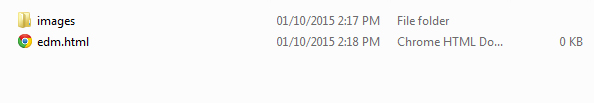
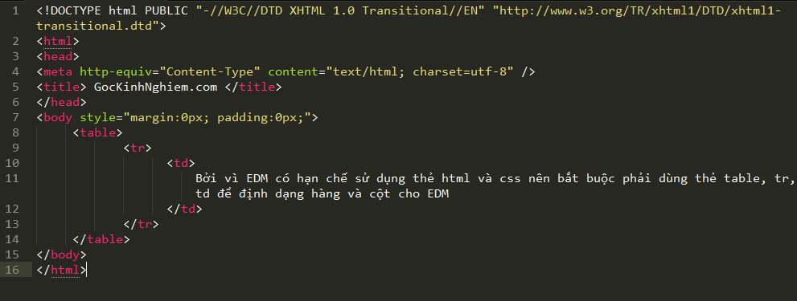

|
Hướng dẫn chi tiết về cách tạo, đặt tên và cắt EDM
|
|
Những điều cần phải biết trước khi cắt EDM:
- Biết những thẻ cơ bản về HTML và CSS.
- Biết cách chuyển từ PSD sang HTML.
- Đọc cuốn EDM.pdf được cung cấp sẵn để biết những gì mà Email, Gmail, Outlook hỗ trợ và không hỗ trợ.
|
- Đầu tiên: Tạo folder EDM
Trong folder EDM gồm:
- Tạo folder chứa hình ảnh được cắt từ PSD đặt tên : images
- Tạo một file mới và save dưới tên và đuôi: edm và đuôi là .html
Ví dụ như hình bên dưới:

- Bước 2: Tạo cấu trúc cho file edm.html
Coppy đoạn code bên dưới vào file edm.html và lưu lại
<html>
<head>
<meta http-equiv="Content-Type" content="text/html; charset=utf-8" />
<title> GocKinhNghiem.com </title>
</head>
<body style="margin:0px; padding:0px;">
<table>
<tr>
<td>
Bởi vì EDM có hạn chế sử dụng thẻ html và css nên bắt buộc phải dùng thẻ table, tr, td để định dạng hàng và cột cho EDM
</td>
</tr>
</table>
</body>
</html>

|
Hướng dẫn làm responsive EDM
Để responsive cho EDM, chúng ta cần gắn đoạn media queries bên dưới vào tag <head> < /head> :
<style>
@media only screen and (max-width: 640px) {
/* Để style css cho EDM trên các ứng dụng thì chúng ta viết ở đây */
ví dụ:
table{font-size:12px !important;}
}
</style>
|
|
Để biết media queries support trên những thiết bị nào thì xem tại đây
|